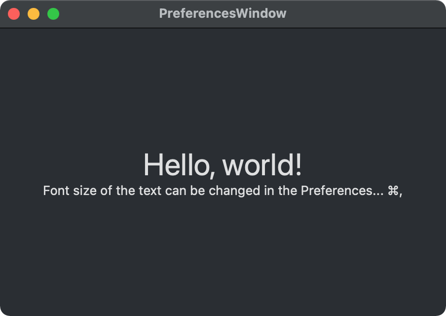
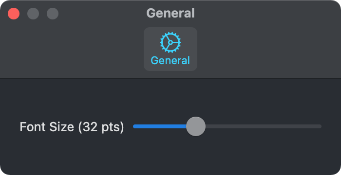

A preferences window is typically used to present and configure the settings associated with a Mac application. In apps built with SwiftUI, these settings are stored and set using the AppStorage property wrapper. To add a preferenes window to your application, you need to add a Settings group to the main App struct.

import SwiftUI
@main
struct PreferencesWindowApp: App {
var body: some Scene {
WindowGroup {
ContentView()
}
Settings {
SettingsView()
}
}
}
Using a TabView you can group settings into different collections and make them easier to find. Below is an example of setting and storing the fontSize value with AppStorage.

import SwiftUI
struct SettingsView: View {
private enum Tabs: Hashable {
case general
}
var body: some View {
TabView {
GeneralSettingsView()
.tabItem {
Label("General", systemImage: "gear")
}
.tag(Tabs.general)
}
.padding(20)
.frame(width: 350, height: 100)
}
}
import SwiftUI
struct GeneralSettingsView: View {
@AppStorage("fontSize") private var fontSize = 12.0
var body: some View {
VStack {
Slider(value: $fontSize, in: 9...82) {
Text("Font Size (\(fontSize, specifier: "%.0f") pts)")
}
}
}
}
import SwiftUI
struct ContentView: View {
@AppStorage("fontSize") private var fontSize = 12
var body: some View {
VStack {
Text("Hello, world!")
.font(.system(size: CGFloat(fontSize)))
Text("Font size of the text can be changed in the Preferences... ⌘,")
}
.frame(width: 420, height: 260)
.padding()
}
}
Gavin Wiggins © 2025
Made on a Mac with Genja. Hosted on GitHub Pages.